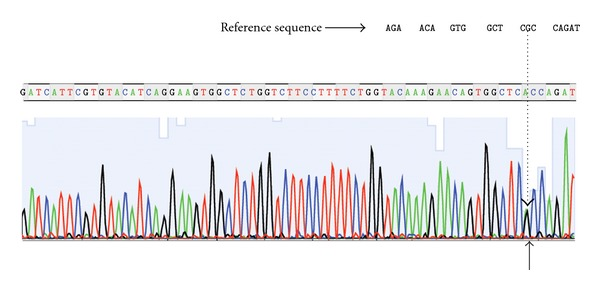
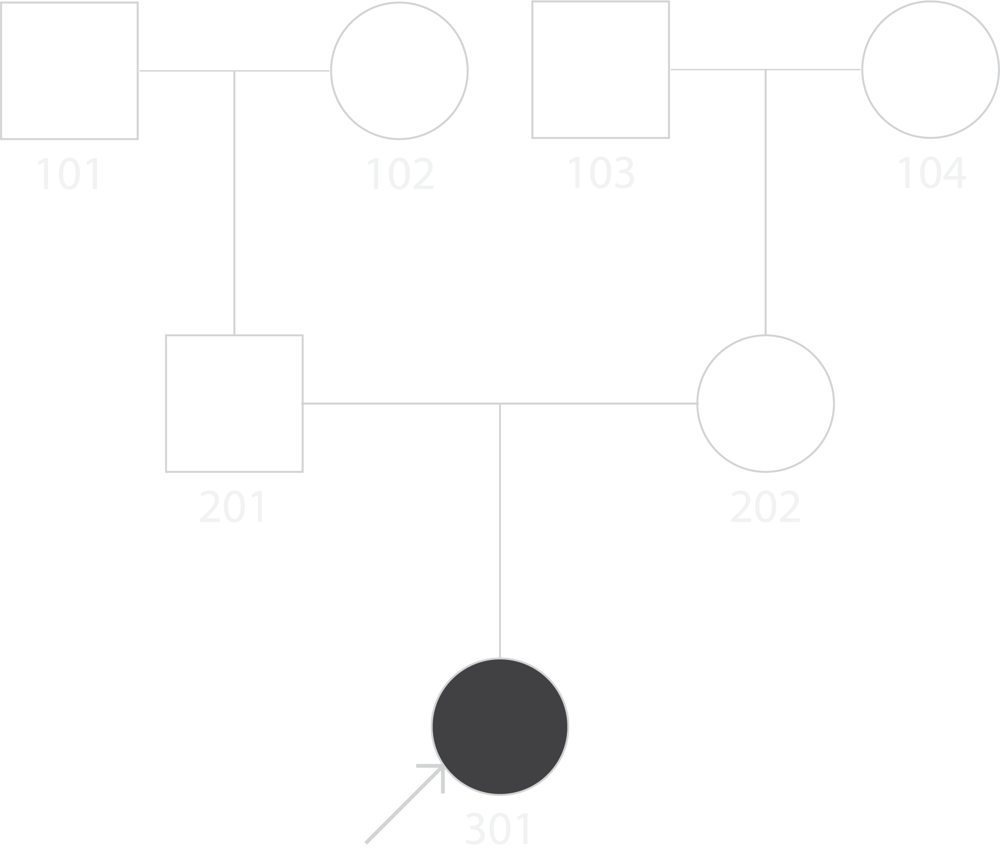

Genetic Counselor's Report
Part 2
The rarity of this condition makes examination and research into the genetics much harder to pinpoint and study accurately, however the data attained by scientists provides good insight. FOP is typically inherited sporadically by spontaneous mutations. The most common mutation of FOP is c.617G > A which mutates the amino acid arginine to histidine. Despite this, the genetic transmission of FOP is found to be autosomal dominant with no sex-links. Inherited FOP shows variable expression within families. The probability that the child of a parent with FOP will also carry the disease is 50% however unfortunately, most carriers of the disease are unable to birth children so this is mostly hypothetical.
Displayed here is the pedigree of the family. The bottom-most child is the one that has FOP. As we can see, there is no one else in the family besides our child that has FOP. It is likely that this is an example of a sporadic gene mutation that caused this instance of the condition.